Patch 3684
Welcome to the patchnotes for the 3684 patch.
Included in this patch are a veterancy overhaul, factory HP changes(yes, again), a sera second gun buff, reduced wreck reclaim rate and more.
Try out the new features and changes, and leave your feedback and replays on the balance forum. Thank you.
-- The Balance Team
Reclaim
Reclaim
There have been some changes discussed for a long time in the community and one of them is decreasing the speed of reclaiming. A T1 engy can reclaim 50 mass/s which is a very high rate. This makes reclaim fields disappear very quickly after being deposited. We have decided to reduce the reclaim rate by half for wrecks to allow reclaim fields to be more contestable to improve the dynamic map control element created by reclaim fields.
- Reclaim time of unit wrecks has been doubled. Props and live units are unaffected.
- The mass and energy value of split trees has been increased by 25% to balance against the inefficiency of reclaiming trees individually.
ACU
Refracting Chronotron Amplifier
The Seraphim second gun is one of the rarest upgrades, many players have never even seen it used in a game. We are buffing it with increased damage and AoE, while increasing the mass cost and decreasing the energy cost to keep it as a very powerful lategame option for an aggressive acu and even telesniping.
- Mass cost:
3500→ 4800 - Energy cost:
300000→ 270000 - AOE:
2→ 2.7 - Additional damage:
400→ 750
Personal Shield Generator
Since the Aeon Personal Shield Generator was reworked in 3662, it was found that the recharge time of the shield was too low. The recharge time is increased to 1 minute 30 seconds.
- ShieldRechargeTime:
65→ 90
Land
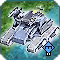Sparky
Reintroduced power drain on Sparkies since the bug that did prevent units with power drain from supporting other units has been fixed.
- Energy Maintenance cost:
0→ 15
Harbinger
Increase Harbinger BuildRate to compensate for the global reduced reclaim speed.
- BuildRate:
3→ 5
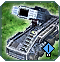Mobile Missile Launchers
The mobile missile launchers of Aeon, Seraphim and UEF are buffed to bring them closer in strength to Cybran MMLs. The MMLs are also given different traits to distinguish them from each other. UEF fires in volleys of three. Aeon missiles have 2 hp but travel much slower. Sera missiles fly faster.
Aeon
Missile:
- Health:
1→ 2 - MaxSpeed:
12→ 8 - Acceleration:
3→ 2 - InitialSpeed:
3→ 2
UEF
- RateofFire:
0.2→ 0.1 - MuzzleSalvoSize:
1→ 3
Seraphim
- Muzzle Velocity:
3→ 4 - RateofFire:
0.15→ 0.1666
Missile:
- MaxSpeed:
12→ 15 - Acceleration:
3→ 4 - InitialSpeed:
3→ 4
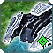Aurora
Aurora now shoot a bit less accurately while moving to reduce their effectiveness while kiting.
- FiringRandomnessWhileMoving:
0.1→ 0.3
Air
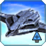Janus
A Janus damage miscalculation is corrected. There was also a very abusable bug which has been found and now fixed.
- DoT Pulses:
15→ 10 - Fixed a bug that made cluster bombs gain a new target halfway through a run.
Scorcher
The UEF t1 bomber gets an increase in the burn time of its bombs to stop it from regularly one shotting t1 tanks that are moving.
- DoTTime:
1.5→ 4.2
Experimental's Veterancy
Instant healing for Experimentals is a somewhat problematic feature, later vets give very large healing boosts which can create coinflip moments and encourage suiciding XPs in rather keeping them alive. In compensation, regen gained from later vets is increased dramatically. XPs will now regain a flat 10% of their base hp on every Veteran level rather than the previous 10%/20%/30%/40%/50% of base health regained on respective vets. This will reward people for keeping their XPs alive which fits much better with the idea of veterancy and is more interesting than gambling on getting those large and unpredictable instant heals..
All Units except ACUs
- Veteran level 1 health regained: 10% of base HP
- Veteran level 2 health regained:
20% of base HP→ 10% - Veteran level 3 health regained:
30% of base HP→ 10% - Veteran level 4 health regained:
40% of base HP→ 10% - Veteran level 5 health regained:
50% of base HP→ 10%
Megalith
- Veteran level 1 regen: 10
- Veteran level 2 regen:
20→ 65 - Veteran level 3 regen:
30→ 120 - Veteran level 4 regen:
40→ 180 - Veteran level 5 regen:
50→ 235
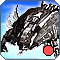Soul Ripper
- Veteran level 1 regen: 10
- Veteran level 2 regen:
20→ 55 - Veteran level 3 regen:
30→ 105 - Veteran level 4 regen:
40→ 155 - Veteran level 5 regen:
50→ 200
Monkeylord
- Veteran level 1 regen: 10
- Veteran level 2 regen:
20→ 40 - Veteran level 3 regen:
30→ 70 - Veteran level 4 regen:
40→ 95 - Veteran level 5 regen:
50→ 125
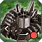Scathis
- Veteran level 1 regen: 10
- Veteran level 2 regen:
20→ 25 - Veteran level 3 regen:
30→ 45 - Veteran level 4 regen:
40→ 60 - Veteran level 5 regen:
50→ 80
Galactic Colossus
- Veteran level 1 regen: 10
- Veteran level 2 regen:
20→ 60 - Veteran level 3 regen:
30→ 115 - Veteran level 4 regen:
40→ 165 - Veteran level 5 regen:
50→ 215
 Temmpest
Temmpest
- Veteran level 1 regen: 10
- Veteran level 2 regen:
20→ 45 - Veteran level 3 regen:
30→ 80 - Veteran level 4 regen:
40→ 115 - Veteran level 5 regen:
50→ 150
Czar
- Veteran level 1 regen: 10
- Veteran level 2 regen:
20→ 45 - Veteran level 3 regen:
30→ 80 - Veteran level 4 regen:
40→ 115 - Veteran level 5 regen:
50→ 145
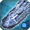Atlantis
- Veteran level 1 regen: 10
- Veteran level 2 regen:
20→ 35 - Veteran level 3 regen:
30→ 65 - Veteran level 4 regen:
40→ 90 - Veteran level 5 regen:
50→ 115
Ythotha
- Veteran level 1 regen: 15
- Veteran level 2 regen:
30→ 60 - Veteran level 3 regen:
45→ 100 - Veteran level 4 regen:
60→ 145 - Veteran level 5 regen:
75→ 185
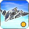Ahwassa
- Veteran level 1 regen: 15
- Veteran level 2 regen:
30→ 50 - Veteran level 3 regen:
45→ 90 - Veteran level 4 regen:
60→ 125 - Veteran level 5 regen:
75→ 160
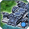Fatboy
- Veteran level 1 regen: 15
- Veteran level 2 regen:
30→ 35 - Veteran level 3 regen:
45→ 55 - Veteran level 4 regen:
60→ 75 - Veteran level 5 regen:
75→ 95
Structures
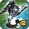Static Flak
Static flak is buffed to allow it to hit T3 Air units more regularly.
Aeon
- Muzzle Velocity:
30→ 35
UEF
- Muzzle Velocity:
25→ 35
Seraphim
- Muzzle Velocity:
25→ 35 - FiringRandomness:
2.5→ 2 - AoE:
3→ 4
Cybran
- Muzzle Velocity:
20→ 30
Factory HPs
Factory HPs are being overhauled to some degree once again, and hopefully for the last time in the near future. Naval factory HPs are the main focus here. Given that navy is a more expensive and generally powerful arena than land or air on a given tech level, it has had some of its hp restored. HP values have also been realigned to make them very easy to learn should you feel the need to, to make predicting the number of units needed to snipe a factory much easier.
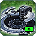 T1 Land/Air + T2 Land/Air Support Factory
- UEF: 4000
- Sera: 3500
- Aeon:
3100→ 3200 - Cybran:
2500→ 2750 - Cybran regen:
6→ 9
T1 Naval Factory
- UEF:
4000→ 4500 - Sera:
3500→ 4000 - Aeon:
3100→ 3700 - Cybran:
2500→ 3200 - Cybran regen:
6→ 10
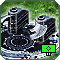 T2 Land/Air HQ + T3 Land/Air Support Factory
- UEF: 8000
- Sera: 7000
- Aeon:
6200→ 6400 - Cybran:
5000→ 5500 - Cybran regen: 20
T2 Naval HQ
- UEF:
13000→ 16000 - Sera:
11000→ 14000 - Aeon:
10000→ 12800 - Cybran:
8000→ 11000 - Cybran regen:
30→ 40
T2 Naval Support Factory
- UEF:
6500→ 8000 - Sera:
5500→ 7000 - Aeon:
5000→ 6400 - Cybran:
4000→ 5500 - Cybran regen:
12→ 20
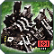 T3 Land/Air HQ
- UEF: 16000
- Sera: 14000
- Aeon:
12400→ 12800 - Cybran:
10000→ 11000 - Cybran regen: 40
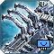 T3 Naval HQ
- UEF: 26000
- Sera:
22000→ 23000 - Aeon:
20000→ 21000 - Cybran:
16000→ 17000 - Cybran regen: 60
T3 Naval Support Factory
- UEF:
17000→ 16000 - Sera:
15000→ 14000 - Aeon:
13000→ 12800 - Cybran: 11000
- Cybran regen: 40
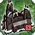 Cybran Regeneration
- Mass Storage Regen:
4→ 3 - Hydrocarbon Power Plant Regen:
6→ 5
Miscellaneous
Megalith
Megalith build power is reduced and the megalith eggs' buildtime is also reduced to nerf the Megalith's ability to reclaim at a very high rate.
- BuildRate:
180→ 45 - Egg BuildTimes reduced by 50%
Satellite
Satellite crash damage is reduced to deter ctrl-k abuse.
- Crash Damage:
3000→ 1000